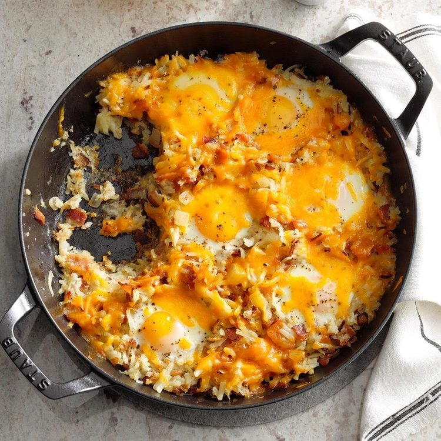

Sheepherder's Breakfast

Description
One-dish breakfast casserole with bacon, eggs, and hash browns.
Ingredients
- 3/4 pound bacon strips, finely chopped
- 1 medium onion, chopped
- 1 package (30 ounces) frozen shredded hash brown potatoes, thawed
- 8 large eggs
- 1/2 teaspoon salt
- 1/4 teaspoon pepper
- 1 cup shredded cheese
Steps
- In a large skillet, cook bacon and onion over medium heat until bacon is crisp. Drain, reserving 1/4 cup drippings in pan.
- Stir in hash browns. Cook, uncovered, over medium heat until bottom is golden brown, about 10 minutes. Turn potatoes. With the back of a spoon, make 8 evenly spaced wells in potato mixture. Break 1 egg into each well. Sprinkle with salt and pepper.
- Cook, covered, on low until eggs are set and potatoes are tender, about 10 minutes. Sprinkle with cheddar cheese; let stand until cheese is melted.
Home